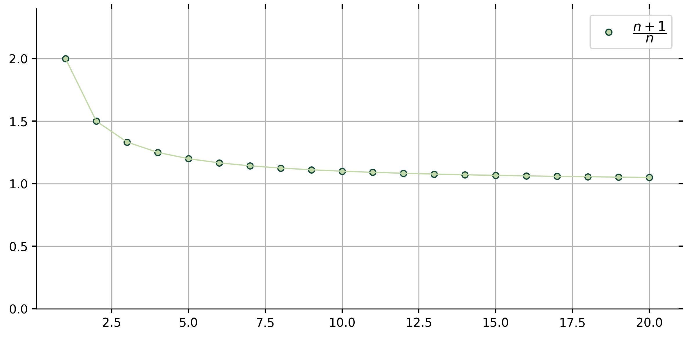
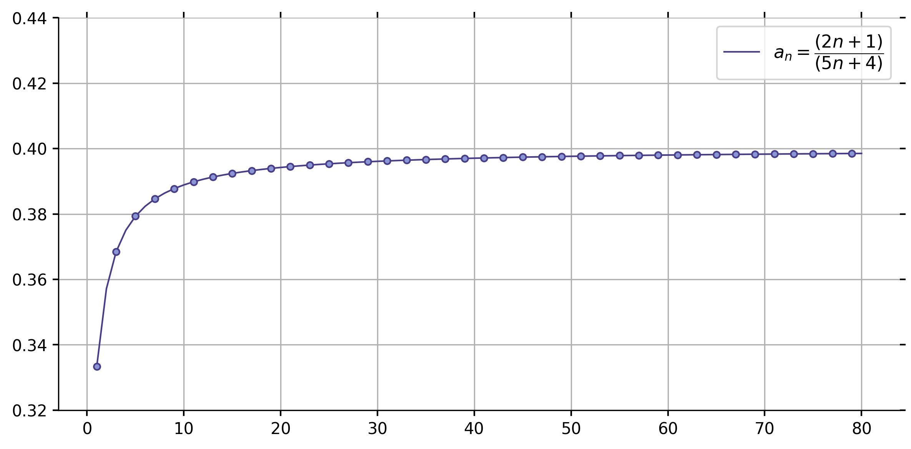
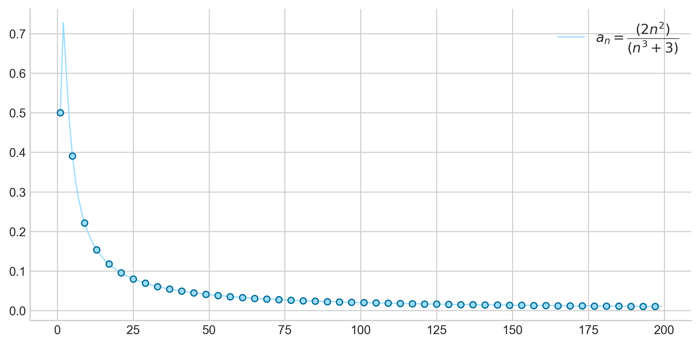

The Limit of a Sequence
Definition (Convergence of a Sequence). A sequence \((a_n)\) converges to a real number \(a\) if, for every positive number \(\epsilon\), there exists an \(N \in \mathbb N\) such that whenever \(n \geq N\) it follows that \(\left|a_n − a\right| \lt \epsilon\).
1. Show that \(\lim_{n\rightarrow\infty}\left(\dfrac{n+1}{n}\right)=1\)
We want to show that \(\left|a_n − a\right| \lt \epsilon,\) and think about the points that satisfy an inequality of this type. The last line of our proof should be that for large values of \(n\),
\[\left|\frac{n+1}{n}-1\right| \lt \epsilon .\]
Simplifying \(\left|\tfrac{n+1}{n}-1\right| = \left|\tfrac{1}{n}\right|\). This is equivalent to the inequality \(\left|\tfrac{1}{n}\right| \lt \epsilon .\) So we have \(\tfrac{1}{n} \lt \epsilon \text{ or } n \gt \tfrac{1}{\epsilon}\). Thus, choosing \(\mathbb{N}\) to be an integer greater than \(\tfrac{1}{\epsilon}\) will suffice.
PROOF. Let \(\epsilon \gt 0\) be arbitrary. Choose \(N \in \mathbb{N}\) with \(\mathbf{N \gt \tfrac{1}{\epsilon}}\). To verify that this choice of \(N\) satisfies the conditions, let \(n \in \mathbb{N}\) satisfy \(n \geq N\). Then this condition implies \(n \geq N \gt \tfrac{1}{\epsilon}\). Hence, \(n \gt \tfrac{1}{\epsilon}\), which is equivalent to \(\tfrac{1}{n} \lt \epsilon\). Therefore, \(\left|\tfrac{n+1}{n}-1\right| \lt \epsilon \;.\)
Python Code
from sympy import limit_seq
from sympy.abc import n
## define sequence
fn = (n+1)/n
## compute the sequence limit
L = limit_seq(fn, n)
print("The sequence", fn, "converges to:", L)
>>> The sequence (n + 1)/n converges to: 1Next, we compute and plot the first 20 terms of the sequence \(\tfrac{n+1}{n}\).
## compute sequence terms
nvals = range(1, 21)
fn_20 = [fn.subs({n:i}) for i in nvals]
## plot sequence
fig, ax = plt.subplots(figsize = (5, 4))
plt.plot(nvals, fn_20, 'o')

Example 2.1.1.
Define the following sequence as \(a_n=\left(1,\ 1,-1,\ 1,\ 1,-1, \ \dots , \underbrace{1,\ 1, -1 \ ,}_{\text{sequence pattern}} \dots \right)\).
Since there are infinitely many 1’s and -1’s, given any \(n\in N, \ \exists k,m \gt N\) such that \(a_k=1\) and \(a_m = -1.\) We want to show that the sequence diverges.
1. Given the sequence \(a_n = n-\sqrt{n+1}\sqrt{n+3}\):
a. Evaluate \(a_{10}, a_{20}, \cdots , a_{50}\) to numerically estimate the limit.
b. Plot the first \(50\) points of the sequence.
c. Compute the \(\lim_{n \rightarrow \infty}a_n\).
Example 2.1.2.
2. Verify that the following sequences converge to the proposed limit.
a. \(\bf {\lim{\dfrac{2n+1}{5n+4}} = \dfrac{2}{5}}\)
We want to prove the inequality \(\left|a_n − a\right| \lt \epsilon\) for the sequence \(a_n = \tfrac{2n+1}{5n+4}\ \) and \(a=\tfrac{2}{5} \in \mathbb{R}\). Hence, we want to show that for suitably large values of \(n \gt N\),
\[\left|\frac{2n+1}{5n+4} - \frac{2}{5} \right| \lt \epsilon.\]
\[ \small \begin{align} \left|\frac{2n+1}{5n+4} - \frac{2}{5} \right| & = \frac{\left|5\left(2n+1\right)-2\left(5n+4\right)\right|}{5\left(5n+4\right)} = \frac{3}{5\left(5n+4\right)}\ \\ &\frac{3}{5\left(5n+4\right)} \lt \epsilon \ \Longleftrightarrow \ n \gt \frac{3 - 20 \epsilon}{25 \epsilon} \end{align} \]
PROOF. Let \(\epsilon \gt 0 \ \) be arbitrary. Choose \(N \in \mathbb N \ \) with \(N \gt \tfrac{3 - 20 \epsilon}{25 \epsilon}\ \).
To verify that this choice of \(N\) is appropriate, let \(n \in \mathbb N\) satisfy \(n \geq N\).
Then, \(n \geq N\) implies \(n \gt \tfrac{3 - 20 \epsilon}{25 \epsilon}\ \), which is the same as saying \(\tfrac{3}{5 \left(5 n + 4\right)} \lt \epsilon\).
Hence, this means \(\small{\left|\dfrac{2n+1}{5n+4} - \dfrac{2}{5} \right| = \left| \dfrac{3}{5 \left(5 n + 4\right)}\right| \lt \epsilon} .\)
So by definition of convergence of a sequence, \(\lim{\tfrac{2n+1}{5n+4}} = \tfrac{2}{5}\).
## define sequence
a = (2*n + 1) / (5*n + 4)
L = limit(abs(a), n, oo) # alternating series test
print('The limit is', L)
>>> The limit is 2/5
## plot sequence
nvals = range(1, 81)
a_80 = [abs(a.subs({n:i})) for i in nvals]
fig, ax = plt.subplots(figsize = (6, 4))
plt.plot(nvals, a_80, linewidth = 1, color = '483d8b', label = r'$a_n = \dfrac{(2n+1)}{(5n+4)}$')
plt.plot(nvals, a_80, 'o', color = '8996d4', markeredgecolor = '483d8b')
b. \(\bf \lim{\cfrac{2n^2}{n^3+3}} = 0\).
We want to prove the inequality \(\left|a_n − a\right| \lt \epsilon\) for the sequence \(a_n = \dfrac{2n^2}{n^3+3}\ \) and \(a=0 \in \mathbb{R}\). Hence, we want to show that for suitably large values of \(n \gt {N}\),
\[\left|\frac{2n^2}{n^3+3} -0 \right| \lt \epsilon.\]
\[ \small \begin{align} \left|\cfrac{2n^2}{n^3+3} - 0 \right| = \left|\cfrac{2n^2}{n^3 + 3}\right| &\cdot \frac{n^{-2}}{n^{-2}} \leq \left|\cfrac{2}{n+\tfrac{3}{n^2}}\right| \leq \left|\cfrac{2}{n}\right| \\ \frac{3}{n} \lt \epsilon \ & \Longleftrightarrow \ n \gt \frac{3}{\epsilon} \end{align} \]
PROOF. Let \(\epsilon \gt 0 \ \) be arbitrary. Choose \(N \in \mathbb N \ \) with \(N \gt \tfrac{3}{\epsilon}\).
To verify that this choice of \(N\) is appropriate, let \(n \in \mathbb N\) satisfy \(n \geq N\).
Then, \(n \geq N\) implies \(n \gt \tfrac{3}{\epsilon}\ \), which is the same as saying \(\tfrac{3}{n} \lt \epsilon\).
Hence, this means \(\small \begin{align} \left|\cfrac{2n^2}{n^3+3} - 0 \right| &\leq \left|\frac{2}{n}\right| \lt \left|\frac{3}{n}\right| \lt \epsilon .\ \end{align}\)
So by definition of convergence of a sequence, \(\lim{\dfrac{2n^2}{n^3 + 3}} = 0\).
## define sequence
a = (2*n**2) / (n**3 + 3)
L = limit(abs(a), n, oo) # alternating series test
print('The limit is', L)
>>> The limit is 0
## plot sequence
nvals = range(1, 81)
a_80 = [abs(a.subs({n:i})) for i in nvals]
fig, ax = plt.subplots(figsize = (6, 4))
plt.plot(nvals, a_80, linewidth = 1, color = '483d8b', label = r'$a_n = \dfrac{(2n+1)}{(5n+4)}$')
plt.plot(nvals, a_80, 'o', color = '8996d4', markeredgecolor = '483d8b')
The Uniqueness of Limits
Theorem (Uniqueness of Limits). The limit of a sequence, when it exists, must be unique.
Example 2.1.3.
4. If \(\mathcal{a_n}\) converges to a real number \(a\) and also \(\mathcal{a_n}\) converges to a real number \(b\), then \(a=b\).
To get started, assume \(a_n \rightarrow a \text{ and } a_n \rightarrow b\). Now argue \(a=b\).